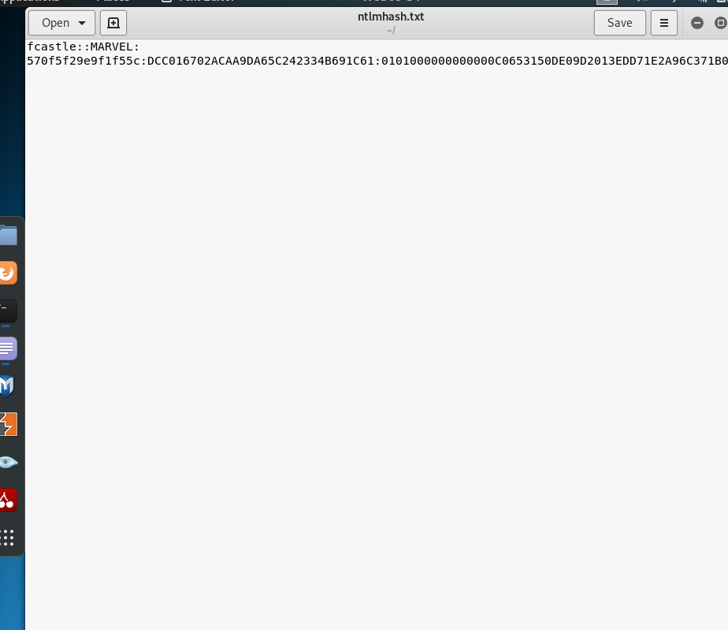

we're gonna use hashcat for cracking these hashes.
firstly create a file and copy paste these hashes to that file.


now we can provide rockyou.txt in /usr/share/wordlists
or we can find another ones in google
like these;
https://github.com/danielmiessler/SecLists
https://github.com/initstring/passphrase-wordlist
when you're doing hack the box or ctf or something like that usually rockyou.txt will be plenty sufficient. Once you start getting into cracking user passwords then you should start loooking for better wordlists.

hashcat --help command hash modes section


as you can see we had succeeded
now if you come up a error like this;

because we're in VM device's hardware will be unsufficient so you should always run your password cracking tool regardless of which will be in your base operating system so now we learn how to install hashcat to windows and we gonna try this from windows.
https://hashcat.net/hashcat/ download binaries from here
then download rockyou.txt to your windows machine it's present in web
then copy paste the hash to your windows machine in a file

-O stands for optimize it speeds up the process.

we could crack that password in both OS.